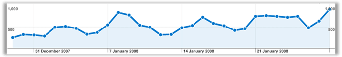
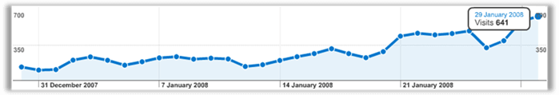
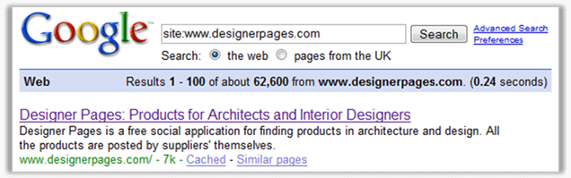
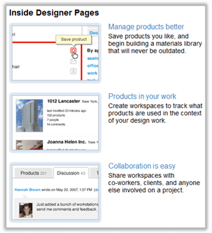

This document is disclosed here for educational use under
CC-BY license
confidential and produced for the sole use of designerpages.com,
and cannot be passed in part or entirety by any means to any other party
without the express permission of
by the author.
SEO case study including
SWOT,
SEO strategy and
followup,
of a campaign that launched exponential growth of organic search traffic for the client.
Achievements
During the first month of the campaign we’ve effectively:
1. Doubled the traffic to the site
The following graph shows increase in traffic from all the online marketing channels. This growth is from 90% backed by the growth of organic search traffic.

2. Achieved 5-fold increase in visits form organic search
Organic search traffic increased from 132 visits on 30/Dec/2007 to 641 visits on 29/Jan/2008.

3. Got 45,000 new pages indexed in Google
Volume of indexed pages increased from 18,000 on the start of the campaign to 62,600 today 31/Jan/2008.

This is just a start of the exponential growth. Read on!
Work done
Onsite changes – quick-wins
301 redirects massively helped Google in indexing of the products on the site. This allowed catering of the content for the long-tail search demand.
In December top 10 keywords delivered 10% of visits whereas in January it was only 5% of visits. The optimisation for long-tail searches has improved.
Direct approach
I continued building relationships with other individuals and organizations in the industry after an extensive research. I contacted few universities offering free invitations to use Designer Pages to all of their students. Some of those requests were ignored, others answered. It is very difficult to track the result of those exercises. You’ll never know when the teacher will ask the students to go ahead and register or whether the university really published a note on their dashboard.
I plan to approach www.asid.org with proposal to replace current InteriorDesignProductFinder.com
Maybe some of your investors could give a helping hand with this.
Brand noise
Services and individuals in the industry were used to vote for the website on a social media site Digg.com. This resulted in nearly 100 indexed links to designerpages.com.
www.google.com/search?q=%22Tight+community+of+Design%22+site:digg.com&filter=0
Cost: $49 one-off
Blog advertising – Brand noise continues
Most of the budget so far was spent on advertising on weblogs. All of these had to meet standard SEO quality guidelines and were analysed and evaluated prior to commencing sponsorship for the particular blog.
| Price($) | Address of the post |
| 20 | andieawicaksono.blogspot.com/2008/01/get-connected-with-designer-products.html |
| 30 | arsitekturmedia.blogspot.com/2007/12/new-media-for-professionals-architects.html |
| 30 | www.3minutestomidnight.org/index.php/2008/01/14/make-interiors-work-for-you.../ |
| 20 | artstyleonline.com/interior_design/interior-design-creative-decisions-and-ideas/ |
| 40 | jesterproductions.biz/designerpagescom/ |
| 39 | perspektif-magazine.com/2008/01/02/new-social-networking-media-for-architects-and-suppliers-at-designerpages/ |
| 35 | abcfinedesignblog.com/2007/12/30/find-the-products-you-need-for-your-project/ |
| 30 | sasha-says.com/2008/01/13/designer-products-at-designer-pages/ |
| 30 | www.kickass.4everlasting.com/2008/01/02/interior-design/ |
| 20 | www.payment20.com/manage-and-search-through-designerpagescom |
| 20 | www.rockwelltechnologygroup.com/online-materials-database-and-collaboration.html |
| 20 | ramanujamp.blogspot.com/2008/01/designer-pages.html |
| 12 | inin78.blogspot.com/2008/01/designer-products-at-designerpagescom.html |
| 10 | 33isthenew23.blogspot.com/2008/01/place-for-designers-to-exchange-ideas.html |
| 20 | andieawicaksono.blogspot.com/2008/01/get-connected-with-designer-products.html |
Cost $356 one-off
Total link-building spend so far is $503, however there are links worth $400 in the process that have not been published and/or paid yet.
Forum announcements
Advertisement on the relevant forum resulted in 30 links in the index so far and around 500 views from highly relevant individuals in the product design and industrial design industry.
www.google.co.uk/search?q=%22want+to+showcase%22+site:www.productdesignforums.com&filter=0
Cost: $38 monthly recurring fee
There were other announcements on different architecture and interior design forums. All of those carry search engine friendly links and the brand name prominently.
arch.designcommunity.com/topic-19378.html, 343 views so far - highly targeted Architecture community
designers-forum.com/Feedback/11059/announcement_designer_pages/, 134 views General Design community
designers-network.com/sites/interior_design/1, Interior design category
Cost: Free
Directory submissions
Website was submitted to relevant categories of nearly 500 index-able directories. This is a time consuming manual excercise, where outcome is hard to estimate. For this reason I decided to outsource it to Indian link-builder.
Cost: $60 one-off
Work outstanding
Outstanding actions from the strategy report
- Separated categories and tag pages
- 301 redirects to keep the value of the indexed pages
- Blocked new search URL
- Product inclusion hints and validation
- Short summary field and Meta data
- XML-RPC interface informing updating services with new products
New homepage design
The following section refers to SEO issues backed with usability suggestions.
Replace Top searches with popular tags
Popular tags feature should replace the top searches feature on the new homepage. Top searches show what people are looking for, however the top “tags” show what kind of content is available on the site. This will help to set expectations of the content available. Most popular tags will also display a starting point for Google to index the product database. New search pages will not be index-able and therefore placement of links to search results would be a waste of value as most of the links built during the link-building campaign are pointed towards the homepage.
Screenshots picture on the right side of the homepage

“Explaining the features” of Designer Pages is what the old (current) homepage is doing really well. The 3 points on the current homepage are very important.- Product management
- Project management
- Collaboration
Screenshots are not very appropriate. This could be replaced with a quick and lightweight introduction (possibly Flash movie) explaining features of the site. What Designer pages are about ? These screenshots do not explain the mission of the site at all.
The Flash movie could basically do the same as the current 3 points on the homepage in a bit more user-facing manner. I’d imagine it could quickly rotate 3 simple slides to explain the main features of the site. You can see similar examples of introduction accross the web, where a movie perfectly explaines the application features in less than half a minute. Flash movie is just a recommendation and if you’ll decide to use this format, it should be backed up with a search friendly alternative version for which I am happy to provide the code.
Featured Review & Recent In-depth Product Reviews
I recommend to cut reviews off the homepage unless there will be unique user-contributed product reviews hosted entirely on the Designer pages. Free space could be utilised for “Today's Popular Products” in this prominent position instead. I also recommend cutting off the DP weblog from the homepage to create more space for advertising opportunities.
Daily creative poll
...is placed strategically very well. It will make the more casual users see the ads every time they visit the site. Polls are more appealing for users which are not under time constraints or in the creative flow. This will presumably help to increase the click-through rate on the ads.
Products section
It is important for rankings in Yahoo that the URIs for categories use names instead of IDs and follow the directory structure as described in the strategy report. It is also important that the permanent redirects are in place correctly for tags and categories so that search engines will not attempt to access URIs returning 404 errors.
Carousel effect on the “new products” section is a bit shaky and not very easy to use compared to similar ma.gnolia.com style carousel, which allows the user to keep up with the direction.